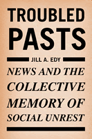

How the media shape collective memory and use that memory to shape our understanding of current events
How the media shape collective memory and use that memory to shape our understanding of current events


 How the media shape collective memory and use that memory to shape our understanding of current events
How the media shape collective memory and use that memory to shape our understanding of current events

|  |
Troubled PastsNews and the Collective Memory of Social UnrestJill A. Edypaper EAN: 978-1-59213-497-7 (ISBN: 1-59213-497-1) |
"This fact-studded book unveils the mysteries surrounding the construction of collective memories about major social crises in the United States. Jill Edy analyzes the 1965 Watts riots and the tumultuous 1968 Chicago Democratic National Convention to reveal how journalists and political elites weave the scattered facts reported initially into meaningful narratives. She also shows how the images of these past events are shaping the construction of subsequent crises. This is an important and timely study because the trauma of September 11, 2001, is currently taking its historical shape. Edy's lessons can help us avoid the many pitfalls that so often produce dysfunctional collective memories."
—Doris A. Graber, University of Illinois at Chicago
A nation's collective memory does not simply exist. It is created. But what factors influence its form and content? And what roles do the news media play in fashioning our collective memory? Here Jill A. Edy observes the process of negotiating a meaning for the past as it unfolds in the news, exploring the ways that news practices, the relationships between actors who make the news, the expectations of news audiences, and the impact of current events affect the development of collective memories in a mass society.
Using the 1965 Watts riots and the 1968 Democratic Convention in Chicago as case studies, Edy creates a useful framework for understanding how, over time, conflicting versions of events are resolved, what forms the resolutions take, and how those resolutions influence the representation of current news stories. Anyone who is interested in political communication and the role of media in public culture will find a wealth of insights in this valuable new book.
Excerpt available at www.temple.edu/tempress
"Beautifully written and consistently illuminating, this book crosses disciplinary boundaries by applying framing and narrative theory to the forces that influence the collective memories and current rhetorical uses of historic political clashes, especially those that erupt from below, initiated by ordinary citizens rather than elites. The book contributes significantly to both social scientific and humanities-oriented scholarship on the powerful political meanings and uses of the past."
—Robert M. Entman, J. B. & M. C. Shapiro Professor of Media and Public Affairs, The George Washington University
"Jill Edy provides a fascinating and important contribution to the study of political communication. Using a creative and fruitful research design, she demonstrates the way political actors communicate about the present through the lens of the past."
—Katherine Cramer Walsh, Department of Political Science, University of Wisconsin, Madison
"In her comprehensive study...Edy advances the study of collective memory in several ways."
—
The International Journal of Communication
"An important addition to the literature on how news is framed and how agendas are set...Edy�s analysis is thoughtful and her citations are thorough."
—
Choice
"Troubled Pasts offers an excellent introduction to the concept of collective memory�[Edy] examines how journalists craft not only the proverbial �first draft� of history but how they help shape later drafts. She also offers an interesting discussion and examples of three ways in which journalists contribute to historical understanding�or misunderstanding: commemorations, analogies, and contexts. The way in which she weaves together journalistic and political issues makes the book appropriate for consideration in a wide range of classes, including media history, media criticism, reporting, U.S. history, political science or sociology....[I]t is well researched, cites numerous sources for journalistic content and theoretical context, and includes a clear discussion of methodology."
—
Journalism History
"[W]ell researched and thought-provoking�a smart book that is of interest to anybody who understands the development of the social stock of knowledge and collective memory as a powerful social process."
—H-Net
"Edy�s short book is extremely well written and her work is well grounded in the literatures of communication and political science. As such, the work is an excellent resource for scholars interested in political communication, framing, media studies, and social history. It makes a significant contribution to our collective understanding of social movements and media coverage of them."
—
Perspectives on Politics
"The overall argument of the book is a strong one and even people who have no particular interest in the events of 40 years ago will find Troubled Pasts a good theoretical model and a good guide to how we might best use the literature about reporting, remembering, framing and motivation."
—
Communications Research Trends/i>
Acknnowledgments
1. Introduction
2. Real-Time News: Covering the Watts Riots and the Chicago Convention
3. Political Officials and the Public Past
4. Defusing Controversy and Paving the Way for Collective Memory
5. Building Collective Memory: Story Integration
6. Using Collective Memory: The Role of the Past in the Present
7. Conclusions: The Future of the Past
Notes
References
Index
Jill A. Edy is Assistant Professor of Communication at the University of Oklahoma.
Political Science and Public Policy
Mass Media and Communications
Race and Ethnicity
© 2015 Temple University. All Rights Reserved. This page: http://www.temple.edu/tempress/titles/1848_reg.html.